The non-linear vehicle model can be linearized by assuming the small angle approximation and neglecting the higher order terms. If the longitudinal velocity is included as a state, the vehicle model becomes non-linear. Therefore, constant longitudinal velocity is required to construct a linear vehicle model. It is also assumed that the tire behaves linearly in the vehicle model. The non-linear tire model involves highly non-linear curve fitting of the tire data. However, the tire lateral force shows linear increase as the slip angle increases up to a certain value. Therefore, the use of the linear equations requires maintaining tire slip angle below a certain value. This slip angle value is determined by the vertical load on the tire, coefficient of friction of the road, and longitudinal slip of the tire. Thus, the linear model is valid under constant longitudinal speed, constant normal load on tires, constant coefficient of friction of the road, and constant longitudinal slip of the tires. The purpose of constructing a linear model is for the design a controller using the extensive number of algorithms developed for linear systems. It is more desirable to linearize the vehicle model in real-time to obtain the most accurate representation of the vehicle behavior. However, a fixed linear model is used in this paper for evaluations of certain driving scenarios. Rewriting the non-linear lateral acceleration and yaw angular acceleration, we have
Since the longitudinal velocity of the vehicle is assumed to be constant, and aerodynamic drag and rolling resistance are neglected, the longitudinal tire forces, 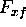 and 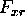 , become zeros. The small angle assumption reduces the sine and cosine terms such that 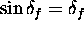 , 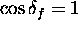 , 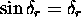 , and 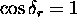 . Therefore, Equation 19 and Equation 20 are simplified as
Operating in their linear region, the linear lateral tire force can be calculated from
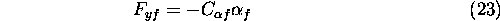
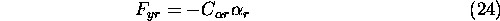
Where 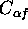 and 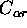 are the tire cornering stiffnesses for front and rear tires, respectively. The tire cornering stiffness is determined by the slop of the linear region on the lateral force vs. slip angle plot. The slip angles for front and rear wheels, 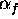 and , are defined by the Equation 11 and Equation 12 with a small angle assumption such that
The complete linear model is found by substituting linearized lateral forces, 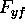 and 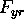 , into Equation 21 and Equation 22. Assuming that there is no steering on a rear wheel ( 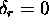 ), the state-space representation of the linear vehicle model is written as follows.
The linearized vehicle model is used to include the driver model and the controller design.